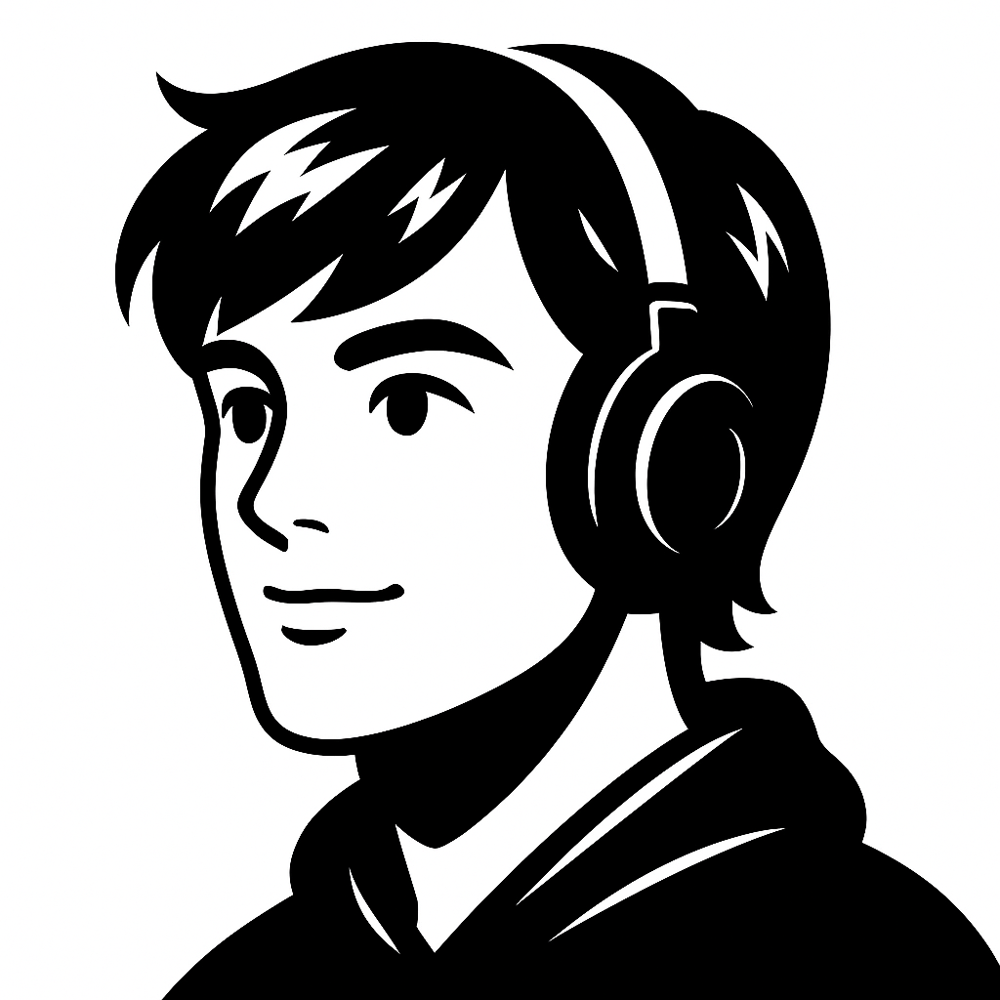
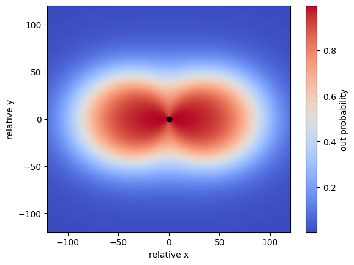

Quentin.J.Cook
collection of all published projects:

Piggybank
A crypto trading platform
2025
“Just as genes propagate themselves in the gene pool by leaping from body to body via sperms or eggs, so memes propagate themselves in the meme pool by leaping from brain to brain via a process which, in the broad sense, can be called imitation.” Richard Dawkins. Give the site a second to boot up, hosting fees are high.
Go to >
Heretic Magazine
A magazine with my friends
2025
My friends and I wanted to bring back a vice style magazine with our own twist. The goal of this project was to get better at React and also explore some interesting ideas I wanted to wrestle with. Overall, very stoked about how it turned out and the content we are producing.
Go to >
Fluid Companion
Property calculator app
2025
An engineering friend saw a need to help with calculating properties of properties. So we built it together. Privacy policy is attached here.
Go to >
Electronic Nose
Olfactory intelligence
2025
Built an electronic nose using various sensors. We were able to detect the presence of various chemicals and gases. We mostly just wanted to get more familiar with hardware.
Go to >
Player Specific Positioning
A side project for the research lab. I wanted to create a model that was able to see the underlying defensive tendencies of players.
2024
The model uses a DNN architecture to identify where a player has strong fielding tendencies. The goal is to include this in a larger model that uses game theory to optimally position fielders.
Go to >
Monte Carlo Simulation
Monte Carlo simulation for changes in stock value
2024
A mathematical model using the Monte Carlo simulation to sample future stock prices for Apple’s stock. In my math class we discussed Monte Carlo methods; I was super fascinated by them so I decided to do a project to get a better grasp for what they have to offer.
Go to >
Peak A Week
Summit the notable mountains along the Wasatch Mountain Range
2024
A goal to climb a peak a week from the Wasatch Front’s beautiful mountain range.
Go to >
Quentin.J.Cook
A 90s style webpage celebrating the OG days of the early internet
2024
I wanted to get myself off of social media and experience the internet like a 90s kid. The best way to do that was to build my own site and put cool things on it.
Go to >